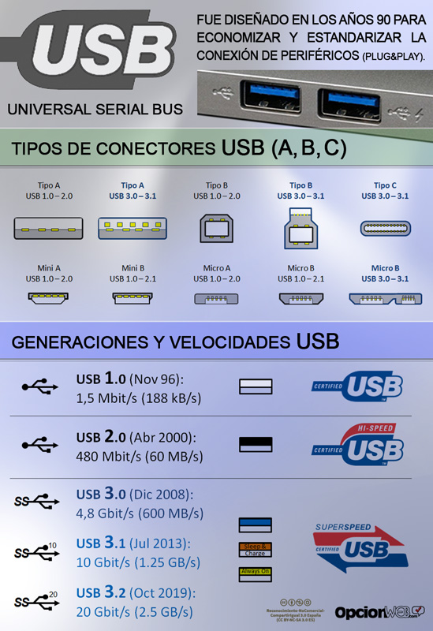

A diario compartimos y recibimos un montón de archivos, ya sean fotos, videos, música, documentos de texto, … Estos archivos se tienen que almacenar en algún sitio para que podamos verlos siempre que queramos. Ya no es como antes cuando necesitábamos sitio en la estantería para guardar enormes álbumes de fotos. Ahora simplemente con tener un Pendrive encima, tener esas fotos guardadas en el móvil o en el ordenador ahorramos gran cantidad de espacio y podemos almacenar y transportar una mayor cantidad de archivos. Todo esto es gracias a las memorias flash.
La memoria flash es un tipo de memoria no volátil (almacena la información de forma permanente) usada en múltiples dispositivos que puede leer o escribir múltiples posiciones de memoria en una misma operación mediante impulsos eléctricos en unidades llamadas bloques. Fueron creadas por Fujio Masuoka en 1984 y son una evolución de las memorias EEPROM, que solo podían escribir o leer una celda de memoria por cada operación. Estos dispositivos de almacenamiento son ultra-silenciosos (no poseen partes móviles), resisten a las altas temperaturas y a los golpes y consumen muy poca energía.
Algunos ejemplos de dónde podemos encontrarla es en unidades USB (Pendrives) o discos SSD, pero también podemos encontrarlas en el chip de la BIOS, en cartuchos de videojuegos o incluso en tarjetas de crédito.
Tal y como su predecesora, las memorias EEPROM, las memorias flash se componen de un conjunto de columnas y filas en su circuitería en las que residen celdas que tienen un transistor. En el caso de las memorias flash cada transistor tiene dos puertas en cada sección. Estos transistores se llaman FAMOS (Floating Gate Avalanche Injection Metal Oxide Semiconductor) y tienen dos puertas lógicas (funcionan con los valores 0 y 1), la CG (Control Gate) y la FG (Floating Gate), que están separados por una fina capa conductora.
Un conjunto de transistores se denomina bloque o sector. Estos bloques solo permiten su utilización un número limitado de veces, permitiendo un número variable de ciclos de borrado. Existen dos tipos de memorias flash según el funcionamiento de sus puertas lógicas, las NOR y las NAND.
Tal y como su predecesora, las memorias EEPROM, las memorias flash se componen de un conjunto de columnas y filas en su circuitería en las que residen celdas que tienen un transistor. En el caso de las memorias flash cada transistor tiene dos puertas en cada sección. Estos transistores se llaman FAMOS (Floating Gate Avalanche Injection Metal Oxide Semiconductor) y tienen dos puertas lógicas (funcionan con los valores 0 y 1), la CG (Control Gate) y la FG (Floating Gate), que están separados por una fina capa conductora.
Un conjunto de transistores se denomina bloque o sector. Estos bloques solo permiten su utilización un número limitado de veces, permitiendo un número variable de ciclos de borrado. Existen dos tipos de memorias flash según el funcionamiento de sus puertas lógicas, las NOR y las NAND.
Es una solución al problema que supone el desgaste de los sectores por el paso de la corriente después de una cantidad de uso. Esta técnica causa que se almacenen datos en la memoria en los sectores que se han escrito a un número relativamente bajo de veces en un intento de evitar que se desgasten rápidamente. Una tabla de búsqueda se almacena en el disco de modo que los datos se tratan como si se almacenaran secuencialmente, aunque no sea así.
Existen dos tipos de memorias flash según su funcionamiento. Las NAND y las NOR:
En las memorias flash de tipo NOR, los tranisitores se encuentran conectados en paralelo. Cuando los electrones se encuentran en FG, anulan el campo eléctrico que generaría CG en caso de estar activo. De esta forma, dependiendo de si la celda está a 1 o a 0, el campo eléctrico de la celda existe o no. Entonces, cuando se lee la celda poniendo un determinado voltaje en CG, la corriente eléctrica fluye o no en función del voltaje almacenado en la celda. La presencia/ausencia de corriente se detecta e interpreta como un 1 o un 0, reproduciendo así el dato almacenado.
Para asignar el valor a una celda se permite el paso de la corriente desde el terminal fuente al terminal drenador, entonces se coloca en CG un voltaje alto para absorber los electrones y retenerlos en el campo eléctrico que genera.
Para borrar (poner a “1”, el estado natural del transistor) el contenido de una celda, expulsar estos electrones, se emplea la técnica de Fowler-Nordheim tunnelling, un proceso de tunelado mecánico-cuántico. Esto es, aplicar un voltaje inverso bastante alto al empleado para atraer a los electrones, convirtiendo al transistor en una pistola de electrones que permite, abriendo el terminal drenador, que los electrones abandonen el mismo. Este proceso es el que provoca el deterioro de las celdas, al aplicar sobre un conductor tan delgado un voltaje tan alto.
Las memorias flash NOR no tienen ningún tipo de tolerancia con las células defectuosas y para borrar información se borra por células enteras en vez de por bloques. Accede a la información de forma aleatoria, es decir, que puede acceder directamente a los datos sin pasar por otros antes. Permiten la recuperación de datos de tamaños hasta de un byte. Tienen mayor velocidad de lectura que las NAND y son mucho más fiables, pero también son mucho más caras y tienen una densidad de memoria más baja. Hay dos tipos dentro de las NOR, las SLC (Single Level Cell, que permite almacenar 1 bit por celda y soporta de 100000 a 1000000 ciclos de borrado; y las MLC (Multi Level Cell, que permiten almacenar 2 bit por celda y soporta 100000 ciclos de borrado.
Como ejemplos de dispositivos donde podemos encontrar en las BIOS, ya sean de PC o dispositivos móviles, y en las tarjetas inteligentes.
Son tarjetas que incorporan un chip integrado y que permiten la ejecución de cierta lógica programada. Almacenar información importante como la identificación digital de un usuario, información de pago y de telefonía móvil. Algunas incluso pueden ejecutar programas. Un lector les otorga la energía que necesitan para funcionar con el que se pueden comunicar siendo insertadas (con contacto) o a través de radiofrecuencia (contactless). Según sus capacidades pueden ser tarjetas de memoria, únicamente contienen ficheros de datos y se usan en aplicaciones de identificación y control de acceso.
También tenemos las tarjetas microprocesadas, que además de ficheros contienen aplicaciones y suelen usarse para identificación y pago con monederos electrónicos. Por último tenemos las tarjetas criptográficas, que además de aplicaciones e información, contienen módulos de hardware para la ejecución de algoritmos en cifrados y firmas digitales. Este tipo de tarjetas suelen ser otorgadas por el banco (tarjeta de crédito) o por una compañía telefónica (tarjeta SIM), por lo que no suele ser común comprarlas.
Las memorias flash NAND utilizan transistores que utilizan puertas lógicas NAND, que se encuentran dispuestos en serie. Usan un túnel de inyección para la escritura y uno de soltado para el borrado. El modo de acceso a los datos es de modo secuencial (orden página-palabra-bit). Tienen mayor velocidad de escritura que las NOR, pero son poco fiables, sensibles a los errores y alos bloques defectuosos, ya que a diferencia de las NOR, estas sí toleran células defectuosas. Son más fáciles de construir, tienen una densidad de memoria y de transistores mayor, lo que las hace tener mayor capacidad de almacenamiento, además de que son más baratas. Esto ha hecho a las memorias flash NAND sean las más utilizadas en el mercado.
Tenemos varios tipos de NAND, al igual que las NOR, tenemos las SLC (1 bit por celda – 100000 ciclos de borrado) y las MLC (2 bits por celda – 5000/ 10000 ciclos de borrado), pero además tenemos las TLC, Triple Level Cell (3 bits por celda – 1000 ciclos de borrado) y las QLC (Quad Level Cell, 4 bits por celda. Existe en desarrollo las PLC (Penta Level Cell), que albergan 5 bits por celda. A más bits, menos ciclos de escritura, por eso las TLC y las QLC son las más baratas y más utilizadas. Podemos encontrar las memorias NAND Flash en discos duros SSD, memorias internas de teléfonos móviles, memorias USB (pendrives), cartuchos de videojuegos y tarjetas removibles.
Son unidades de almacenamiento basadas en memorias flash NAND. Se suelen utilizar en PCs y ordenadores portátiles como unidad de almacenamiento local. También pueden presentarse como unidades externas (conectadas por eSATA o USB). Son más rápidos y fiables que los HDD, pero son más caros y son menos duraderos y fiables. En el mercado existen unidades SSD de hasta 16 TB, pero las más comercializadas son de hasta 2 TB Existen tres tipos de SSD según como se conectan:
En PCComponentes podemos encontrar unidades de 1TB en torno a los 100€
Son unidades de almacenamiento externas basadas en las memorias flash NAND, que se conectan al dispositivo a través de un puerto USB (A, B o C). Son dispositivos que utilizan la tecnología hotplug, conexión en caliente. Esta tecnología les permite poder conectarse y desconectarse del ordenador sin necesidad de apagarlo. Son muy resistentes a los golpes, las vibraciones, la humedad y las altas temperaturas. En el mercado hay memorias USB de hasta 1 TB. En al siguiente tabla tenemos las distintas generaciones de USB y sus velocidades de transferencia.
Podemos encontrar en Amazon memorias USB 3.0 de 32 GB de almacenamiento en torno a los 6€
Para leer estas unidades de almacenamiento se necesita un lector de tarjetas de memoria, que se conectan mediante USB. También son dispositivos hotplug y son baratas, versatiles, baratas e ideales para el almacenamiento auxiliar como como los Pendrives. Se usan generalmente para el almacenamiento auxiliar en videoconsolas, cámaras de foto/video y dispositivos móviles (microSD).
Hay distintos tipos:
Las más utilizadas son las SD. Podemos encontrarlas de 128 GB en Amazon en torno a los 25€
La instalación de una memoria flash en un equipo es muy sencilla, solo basta con conectarla a su puerto específico, ya sea SSD, USB o SD. Si queremos utilizar la SSD como “disco duro”, necesitaremos instalar en ella el sistema operativo. Una vez instalado necesitaremos hacer la partición del disco.
Antes de hacer este trabajo desconocía el funcionamiento de las memorias flash y me ha gustado conocerlo ya que utilizo constantemente Pendrives, SSDs o SDs. Esta tecnología nos ha facilitado la vida a todos y es difícil concebir la vida sin ellas.